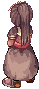
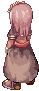
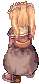
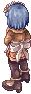
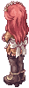
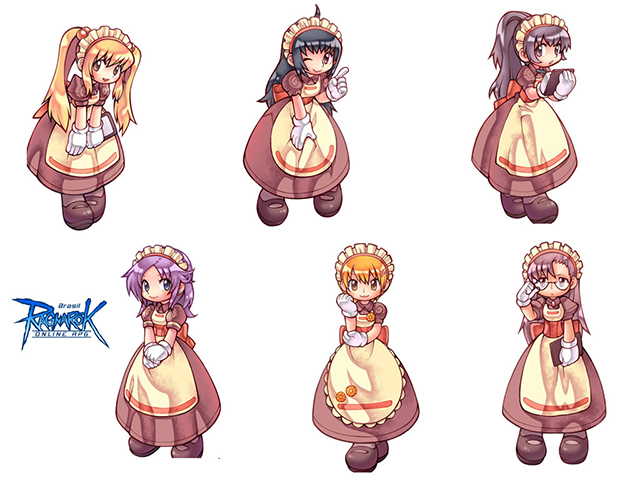

画像にリンクがはってあるものは、クリックすると別窓で大きめサイズが表示されます。
|  | |
| kafra_01.bmp カプラ・ディフォルテー |
kafra_02.bmp カプラ・テーリング |
 |
|
| kafra_03.bmp カプラ・ソリン |
kafra_04.bmp カプラ・ビニット |
|  |  |
| kafra_05.bmp カプラ・グラリス |
kafra_06.bmp カプラ・W |
|  | |
| kafra_07.bmp カプラサービス西部支部 |
kafra_07.bmp カプラサービス西部支部 |
|  | |
| kafra_09.bmp リヒタルゼンカプラ2 |
zonda_01.bmp ジョンダ職員 |
|  |
| カプラ職員デフォルメイラスト |
back
(c) Gravity Co., Ltd. & Lee MyoungJin(studio DTDS). All rights reserved.
(c) GungHo Online Entertainment, Inc. All Rights Reserved.
当コンテンツの再利用（再転載・配布など）は、禁止しています。